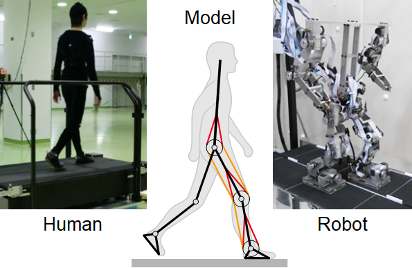

Research Topic
Our study aims to elucidate the mechanisms of intelligent adaptive behaviors, especially locomotion, in humans and animals through the analysis of measured data and computer simulation of neuro-musculo-skeletal systems based on the dynamical systems theory and computational neuroscience. Furthermore, we develop the control scheme of legged robots based on the findings to achieve adaptive locomotor functions.
News
Feb 9, 2026
Guest Assoc. Prof. Ambe and So (International Student, 2023) published a modeling study of skipping from Advanced Robotics Research. Here.
Jul 5, 2025
Matsuyama (M2, 2022) and Assoc. Prof. Kobayashi published a study of changes in muscle viscoelasticity during static stretching from Journal of the Mechanical Behavior of Biomedical Materials. Here.
Mar 24, 2025
Visiting Researcher Adachi published a study of gravity-dependent walk-run transition using a simple model from Physical Review Research in collaboration with Prof. Emeritus Tsuchiya (Kyoto U). Here.
Mar 20, 2025
Assoc. Prof. Kobayashi published a study of reservoir computing using human soft tissue from IEEE Access. Here.
Oct 22, 2024
We published a study of trunk-leg coordination during walking from Neuroscience Research in collaboration with Mr. Furukawa, Prof. Aoyagi (Kyoto U), Dr. Arai (JAMSTEC), and Assoc. Prof. Funato (UEC). Here.
Sep 20, 2024
We published a study of interlimb coordination during walking from Communications Biology in collaboration with Dr. Arai (JAMSTEC), Prof. Aoyagi (Kyoto U), and Assoc. Prof. Funato (UEC). Here. (Press release)
Mar 6, 2024
Seminar on Mechanical Science and Bioengineering by Prof. Cecilia García Cena from Polytechnic University of Madrid will be held on Wednesday, March 13. Here.
Dec 22, 2023
Assist. Prof. Ambe published a study of aerial-hose-type firefighting robot from Frontiers in Robotics and AI with Assist. Prof. Yamauchi (Akita Prefectural U) and Assoc. Prof. Konyo, Assoc. Prof. Tadakuma, Emeritus Prof. Maruyama, and Prof. Tadokoro (Tohoku U). Here.
Nov 22, 2023
Okamoto (D3, Kyoto University) published a study of fractal basin of attraction in passive dynamic walking from Nonlinear Dynamics in collaboration with Prof. Kokubu and Assist. Prof. Akashi (Kyoto U), Prof. Obayashi (Okayama U), and Assoc. Prof. Nakajima (U Tokyo). Here.
Sep 30, 2023
Assist. Prof. Ambe published a study of air jet-actuated continuum robot from Journal of Intelligent & Robotic Systems with Assist. Prof. Yamauchi (Akita Prefectural U) and Assoc. Prof. Konyo, Assoc. Prof. Tadakuma, Emeritus Prof. Maruyama, and Prof. Tadokoro (Tohoku U). Here.
Sep 22, 2023
Assist. Prof. Ambe published a study of jet-actuated flying continuum robot from IEEE Robotics and Automation Letters with Assist. Prof. Yamauchi (Akita Prefectural U) and Assoc. Prof. Konyo, Assoc. Prof. Tadakuma, and Prof. Tadokoro (Tohoku U). Here.
Sep 7, 2023
Dr. Ohtsu (JSPS PD) published a modeling study of human walking from Scientific Reports in collaboration with Prof. Hase (Tokyo Metropolitan U) and Prof. Ogaya (Saitama Prefectural U). Here.
May 29, 2023
We published a study of myriapod robot with variable body-axis stiffness from Soft Robotics. Here. (Press release)
May 8, 2023
Seminar on Mechanical Science and Bioengineering by Dr. Simon M. Danner, Dr. Shravan Tata Ramalingasetty, and Andrew B. Lockhart from Drexel University College of Medicine will be held on Monday, June 5. Here.
Dec. 21, 2022
Prof. Aoi gave a talk at School of Biological Sciences, Georgia Institute of Technology, USA. Here.
Sep. 8, 2022
Our website was opened.
Jun. 22, 2022
Okamoto (D2, Kyoto University) published a modeling study of humans from Frontiers in Neural Circuits
in collaboration with Prof. Kokubu (Kyoto U) and Prof. Obayashi (Okayama U). Here.
Jun. 3, 2022
Adachi published a modeling study of quadrupeds from Frontiers in Bioengineering and Biotechnology in
collaboration with Prof. Matsuno (Kyoto U) and Assist. Prof. Kamimura (Nagoya Inst Tech). Here.
May 10, 2022
We published a study of many-legged robot from IEEE Transactions on Robotics. Here.
Apr. 14, 2022
We published a modeling study of cheetahs from Frontiers in Bioengineering and Biotechnology in
collaboration with Assist. Prof. Kamimura (Nagoya Inst Tech), Prof. Wada and Assist. Prof. Higurashi (Yamaguchi U), and Prof.
Matsuno (Kyoto U). Here.
Apr. 8, 2022
Kim (M2, Kyoto University) published a neuro-musculo-skeletal modeling study of cats from Frontiers in
Bioengineering and Biotechnology in collaboration with the research group of Prof. Rybak (Drexel U),
Prof. Yanagihara (U Tokyo), and Prof. Fujiki (Dokkyo Med U). Here.
Apr. 1, 2022
Our laboratory was launched.